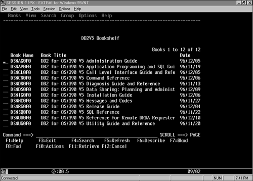
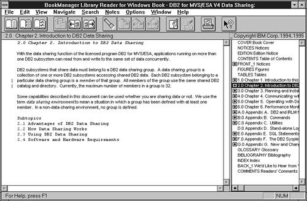

|
|
< Day Day Up > |
|
EducationEducation is the first issue that should be addressed after your organization decides to implement DB2. Does your organization understand what DB2 is? How it works? For what purposes it is needed at your shop? How it will be used? Without a sound understanding of DB2, its components and features, it is unlikely that you will be able to use DB2 to its best advantage. This basic level of DB2 knowledge can be acquired through a short DB2 fundamentals class for the IT personnel charged with making DB2 a success at your organization. After addressing the basics of DB2 education, you must deal with ongoing support for DB2 education. This support falls into four categories. The first category of training is a standard regimen of SQL and DB2 programming training to be used by application developers. Every programmer should receive basic training on SQL, education on how to embed SQL in the programming languages they will be using, and possibly a course on using DB2 with CICS or IMS. If this basic level of DB2 education is not required for every DB2 programmer, then DB2 application performance will surely suffer as untrained coders write inefficient and incorrect SQL. The second category of education support is external training for special needs. This support includes education for database administrators, technical support personnel, and performance analysts. Additionally, your organization needs to plan for ongoing education to keep appropriate personnel up-to-date on new versions and releases of DB2. Although IBM typically offers the earliest courses for new DB2 releases, several third-party vendors such as SML, Inc., YL&A, Inc., and Themis regularly offer release-specific DB2 courses and lectures. The third category of education is in-house, interactive training in the form of videos, computer-based training, and instructor-led courses. These courses should be used to augment and refresh the formal training given to your DB2 professional staff. The final category of support is reference material—for example, IBM's DB2 manuals, DB2 books such as this one, vendor-supplied white papers, and industry publications and periodicals. The current IBM manuals for DB2 are listed on the inside back cover of this book. Providing online access to the DB2 and related manuals using Book Manager Library Reader on the mainframe (as shown in Figure 40.1), the workstation (as shown in Figure 40.2), or both is a good idea. Furthermore, most of the DB2 manuals can be downloaded free-of-charge (in Adobe Acrobat format) from IBM's Web site. Figure 40.1. IBM BookManager Library Reader on the mainframe.Figure 40.2. IBM BookManager Library Reader for Windows.Vendors are another rich source of DB2 information. The major vendors provide in-depth technical papers on features of DB2 that would be difficult for most shops to research in the same detail. BMC Software, Candle Corporation, Compuware Corporation, Computer Associates, and Quest Software are the best sources for DB2-related white papers. All of these educational components—in-house education, external education, and industry publications—are useful for learning how you can use DB2 effectively. You would be wise to have a mix of material that supports more than one of the categories outlined previously. In this way, you provide a varied learning environment that meets the needs of all students. This varied learning environment allows each student to learn in the most conducive way for him or her. Plan to provide an on-site library of educational material addressing the following subjects:
You also might want to have an introductory DB2 database administration course to train new DBAs. In addition to this basic education library, plan to provide advanced education for technical DB2 users, such as DBAs, technical support personnel, and technical programmers and analysts. Advanced DBA topics (such as data sharing, performance management, and backup/recovery) should be left to instructor-led training courses because of the complex nature of DB2 database administration. Additional advanced topics to consider include system administration (for systems programmers) and disaster recovery. Many vendors, including IBM and Themis, offer these classes. Searching for smaller consulting firms and local resources is also prudent; these firms usually provide courses tailored to your installation needs. The advanced education program should include allocating time to attend area user groups meetings, the annual IBM DB2 Technical Conference, and/or the International DB2 Users Group (IDUG). When DB2 users get together to share experiences at such forums, they uncover undocumented solutions and ideas that would be difficult to arrive at independently. DB2-Related Industry PeriodicalsAnother good type of reference material is industry periodicals and publications. Many trade magazines describe database management in general and DB2 specifically. Regular periodical reading can form the basis of a sound, continuing education in DB2 fundamentals. A listing of recommended industry publications that cover DB2 on a regular basis follows.
Data Based Advisor was formerly a print magazine for PC and client/server databases. The Advisor Web site has replaced the print publication. It covers many areas of IT, one section of which is database-focused. The site provides regular SQL coverage, but only rarely discusses DB2.
This free online publication from Candle features in-depth technical articles, updates on Candle products, quick tips on how to tune your systems, and technology case studies. Sporadic coverage of DB2.
In-depth data processing newspaper. Frequently contains database-related articles. DB2-specific information is sporadic at best, but the coverage of IT news is outstanding.
This Web-based newsletter focuses on data administration and database administration topics. Frequently covers issues pertinent to DB2 data and database management.
Interesting publication addressing all types of database management system issues. Highlights include a large product review section, but only occasional DB2-related articles. Recent editorial focus is heavily oriented toward data warehousing topics. On their Web site, you also can subscribe to DM Direct, an email-based newsletter on data management topics.
Provides coverage of news affecting the data processing community. Sporadic coverage of IBM and DB2. No longer published in hard copy; available only on the Web.
This Web portal offers original content for DBAs—not just for DB2, but for IMS, Oracle, and SQL Server as well—and a vast array of links to technical content on other Web sites.
This magazine, sponsored by IBM, provides in-depth, technical articles focused on the DB2 family of products. The Web site has some Web-only content. Very useful for DB2 shops.
This email newsletter, compiled by IBM, provides information and news about DB2, as well as a good number of links to technical DB2 articles. Every DB2 DBA should subscribe to this newsletter.
Each issue is devoted to DB2. Provides technical articles on all areas of DB2 administration, design, and development. Each issue contains 20 to 30 pages, with no advertisements. Expensive, but well-worth the cost. Xephon also publishes many other technical journals including ones that focus on MVS and CICS.
Technical articles written by IBM staff about IBM products and architectures. Sometimes covers DB2 topics. Every IBM shop should subscribe to this journal.
This journal is published specifically for the DB2 community and focuses on exclusively on DB2 content across multiple platforms. Published by IDUG.
In addition to timely DP news, contains frequent user-focused articles related to DBMS technology.
A good, general-purpose monthly publication for DBAs and DAs. Provides extensive coverage of all aspects of database development. Contains a regular column by Joe Celko and occasional coverage of DB2. This publication is the result of Miller Freeman combining two prior database-focused publications: DBMS Magazine and Database Programming & Design.
Provides in-depth technical articles focusing on all areas of IBM mainframe development. Contains coverage of DB2 in every issue. Also periodically covers WebSphere, CICS, IMS, and other mainframe development issues. The DB2 Mailing ListAnyone who administers, supports, or writes programs using DB2 should subscribe to the DB2 mailing list. Mailing lists are a sort of community bulletin board. Simply by subscribing to a mailing list, information is sent directly to your e-mail in-box. Details on how to subscribe are provided in Chapter 17, "DB2 and the Internet." |
|
|
< Day Day Up > |
|